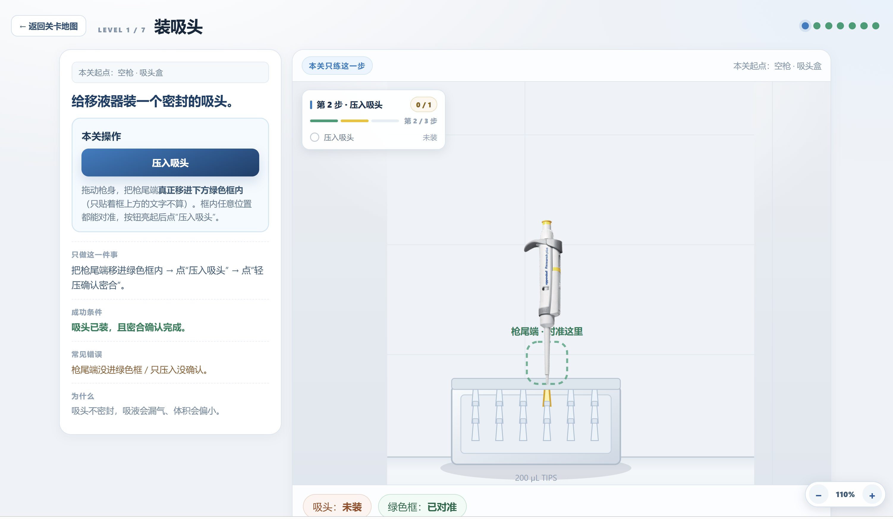

看看每一关怎么练。
七个关卡里选了四个关键关卡，加上完整路径总览。截图会自动播放；点击关卡切换，点画面可放大查看。

01 / 05
LEVEL 1 / 7

实验室试用
戴上眼镜，照常做实验。
同学们戴着眼镜在实验室里完成移液和上机。提示出现在眼镜里，手不用离开实验台。


七个关卡里选了四个关键关卡，加上完整路径总览。截图会自动播放；点击关卡切换，点画面可放大查看。

实验室试用
同学们戴着眼镜在实验室里完成移液和上机。提示出现在眼镜里，手不用离开实验台。